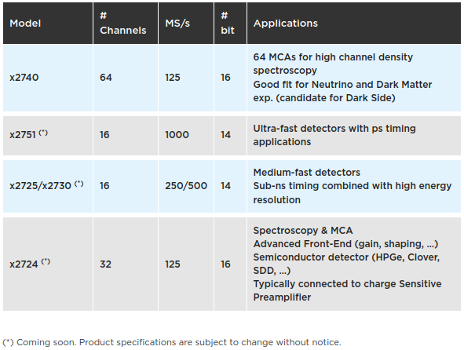

采购推荐
PKUCAENDAQ 长期进行版本更新，请大家时常关注是否有新版本发布。如有任何疑问，请与吴鸿毅联系（wuhongyi@qq.com / wuhongyi@pku.edu.cn）
CAEN 公司正在推出的数字化 2.0 系列采集卡，涵盖 125M/250M/500M以及1G采样频率。
本程序支持数字化 2.0 系列中所有所有型号(不支持上一代 x724/x725/x730 等产品)以及所有类型固件混合运行。目前已经上市的产品包括 2740/2745 系列，每个模块 64 通道， 125M 采样率，垂直精度 16位；2730 系列，每个模块 32 通道， 500 M 采样率，垂直精度 14位。
从大规模实验的使用角度来考虑，我们推荐大家尽可能采购 VME 版本而不是桌面版本。VME 版本搭配单槽机箱（μ-crate）同样便携使用，且能够保留它搭建大阵列使用的能力。
逻辑模块
V2495/DT5495 需要复杂实验触发逻辑的用户需要采购该配套模块。我们建议每个机箱配一个该模块。
对于每个 V2495/DT5495，我们建议添加三个 A395D 子板。